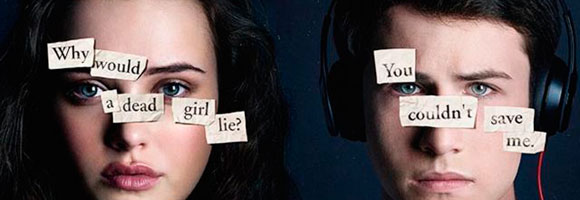
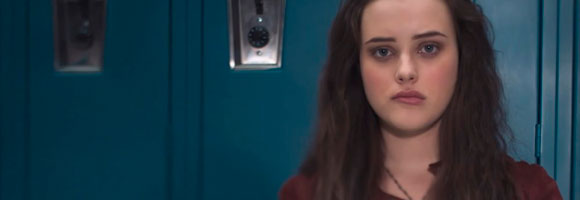
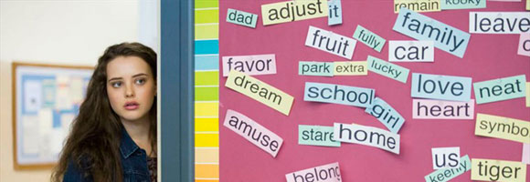

Buenas intenciones pero pocas ideas en la temporada dos de "13 Reasons Why"
"Desde el momento en que empezás a hablar de algo, todo se vuelve más fácil", asevera la actriz Alisha Boe en el breve clip (disclaimer) que abre la segunda temporada de 13 Reasons Why . El video también muestra al resto de los protagonistas advirtiendo sobre el contenido de la serie, poniendo así sobre la mesa el modo con el que Netflix abordó la anticipada vuelta de la creación de Brian Yorkey : con extrema responsabilidad sobre el alcance masivo de un producto que toca temas que pueden sensibilizar (con menor o mayor intensidad) a quienes hayan atravesado (o atraviesan) hechos similares. Asimismo, la plataforma de streaming concibió un espacio de consulta y auxilio para quienes estén viviendo situaciones de depresión, bullying, abuso y adicción a las drogas: 13reasonswhy.info. De todas formas, la segunda temporada de la serie demostró que ésta siempre fue muy dependiente del material de base - la novela de Jay Asher que narraba la concatenación de hechos que llevaron a la joven Hannah Baker al suicidio -, dado que nunca logra funcionar autónomamente.
El impacto que tuvo la primera temporada de 13 Reasons Why convirtió a Hannah en una suerte de emblema, una figura que representaba problemáticas adolescentes como el bullying silencioso que se suscita en la escuela secundaria (desde rumores falsos hasta la expulsión de ciertos círculos), el abuso sexual, la depresión y el suicidio. En la segunda temporada se vuelve rápidamente evidente que Yorkey y su equipo de guionistas quisieron mantener a Katherine Langford en la historia, pero no lograron que la presencia de su personaje se vuelva cohesiva, al emplear dos recursos trillados a los que no se los pudo implementar con éxito. En primera instancia, el uso de los flashbacks para completar los espacios en blanco de la vida de Hannah resultan disonantes con las historias de la primera temporada (su noviazgo oculto con Zach, por ejemplo, carece de lógica y contradice líneas argumentales trazadas previamente). En segunda instancia, desde el episodio inicial la joven se le aparece a Clay Jensen (Dylan Minnette) como un fantasma y, con excepción de algunos gags autoconscientes, sus constantes charlas no cuadran con el tono general de la serie. Por lo tanto, los pocos momentos en los que Hannah deja de ser un símbolo y la presencia de Langford se siente justificada son aquellos en los que sus padres y amigos la recuerdan con anécdotas donde la vemos a través de un prisma y comprobamos que, desde el comienzo, ella siempre fue una mujer que luchó para combatir la soledad, incluso desde sus imperfecciones.
Se podía prever que, ya sin el contexto de los trece cassettes como marco narrativo, 13 Reasons Why iba a tener que encontrar otro modo de articular sus trece episodios. Por lo tanto, se eligió como mecanismo el desarrollo del juicio de los Baker contra la secundaria Liberty, y los testimonios de todos los estudiantes que se vincularon con Hannah. En consecuencia, cada capítulo es narrado por una voz en off diferente, dependiendo del individuo llamado a testificar. El problema surge cuando cada personaje enarbola las mismas sentencias que, si bien se nutren de buenas intenciones, se vuelven simplistas en el amplio espectro de las temáticas tratadas (en realidad, todo el juicio evoluciona de manera endeble e improbable). Frases hechas sobre la culpa, la redención y el efecto dominó del bullying se repiten constantemente ("la verdad te puede liberar si la dejás"), como si la serie hubiera quedado atrapada en un círculo vicioso de autoindulgencia. Asimismo, se añade un misterio que se prolonga demasiado: la aparición de unas polaroids en las que vemos inconscientes a las víctimas de abuso de Bryce Walker (Justin Prentice). Las imágenes son duras y difíciles de procesar, pero se las trivializa al buscar el golpe de efecto respecto a la identidad de la persona que las tomó. Así, 13 Reasons Why vuelve con una temporada que, más allá de la búsqueda de justicia (legal y de otra índole) para Hannah, no puede eludir la reiteración de conversaciones y situaciones que podrían haberse sintetizado en no más de seis episodios.
